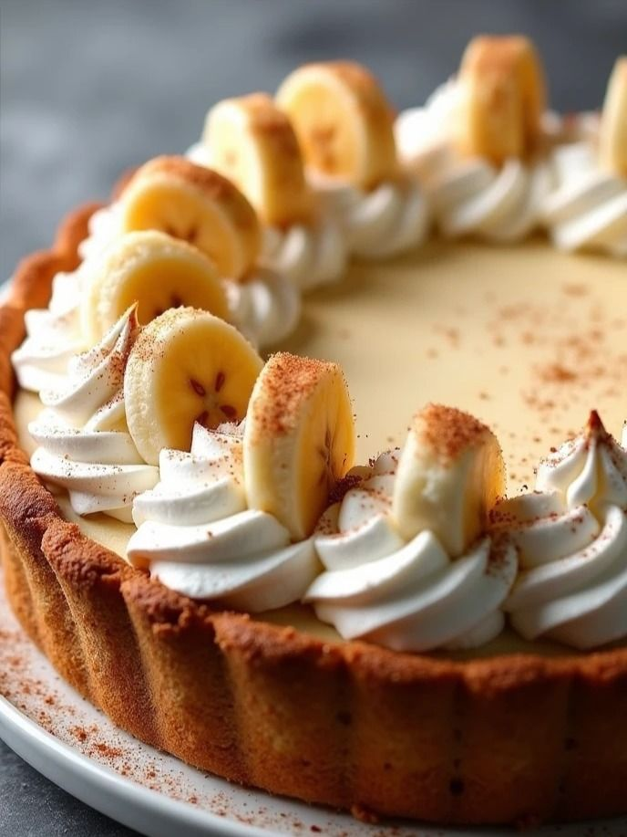

Banoffe

- 300 g de bolacha maizena
- 120 g de manteiga
- 6 bananas nanicas
- 800 g de doce de leite
- 350 g de chantilly
- Cacau em pó em cima
Modo de Preparo
- Triture as bolachas em um triturador ou liquidificador.
- Acrescente a manteiga derretida e misture até formar uma farofa úmida.
- Despeje em uma travessa, pressionando bem o fundo.
- Leve a travessa ao congelador por 30 minutos.
- Descasque as bananas, e corte-as em rodelas.
- Faça uma camada de doce de leite por cima da sua base de bolacha.
- Distribua as rodelas de banana sobre a camada do doce de leite.
- Coloque mais uma camada de doce de leite.
- Em uma tigela, você vai acrescentar o chantilly e bater em batedeira ou liquidificador até pegar o ponto firme ou de sua preferência.
- Espalhe ele por cima de tudo.
- Leve á geladeira por no minímo 2 horas.
- Decore com um pouco de cacau em pó por cima (opcional).
- Agora é só se deliciar.